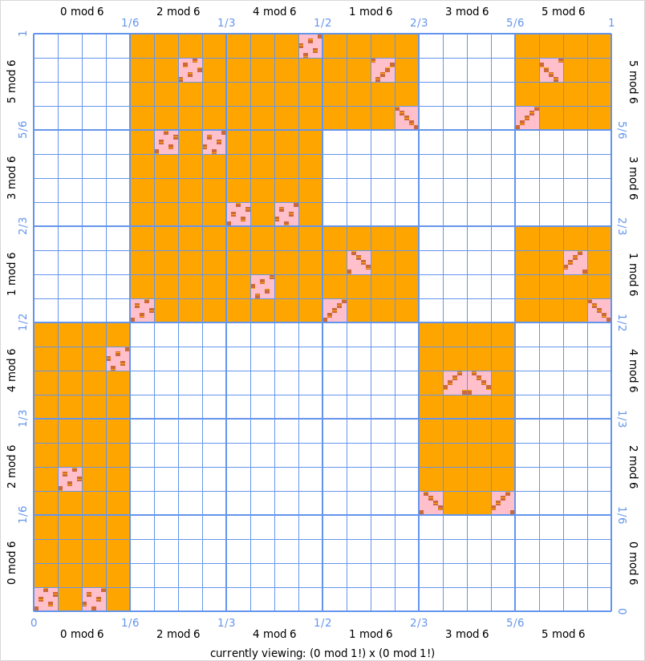

Profinite Graphs¶
Profinite Graph
Let \(F: \hat{\ZZ} \to \hat{\ZZ}\) be a function and let \(P\) be a
profinite_function.ProfiniteFunction implementing \(F\). This file
implements interactive profinite graphs in the class ProfiniteGraph:
a user can view arbitrarily high precision approximations of the graph
\(\{(x, F(x)) \mid x \in \hat{\ZZ}\}\) of \(F\) by zooming in and out.
We use the class profinite_integer.ProfiniteIntegers as our
implementation of \(\hat{\ZZ}\) and by a profinite integer we shall mean an
instance of Zhat, i.e. ProfiniteIntegers(QQ). Also by 3 mod 6 we
shall mean the profinite integer Zhat(3, 6).
In this file we use the character ‘!’ to mean factorial (e.g. \(4!\) is \(24\)).
Factorial digits¶
Every \(\alpha \in \hat{\ZZ}\) is uniquely determined by its factorial digits,
which are the unique integers \(d_1, d_2, d_3, d_4, ... \in \ZZ\) satisfying
\(0 \leq d_k \leq k\) and \(\alpha \equiv \sum_{i=1}^k d_i \cdot i! \mod
(k+1)!\hat{\ZZ}\) for every \(k \in \ZZ_{\geq 1}\). Knowing the first \(k\) factorial
digits of \(\alpha\) corresponds to knowing \(\alpha\) modulo \((k+1)!\). These
factorial digits are implemented in Zhat:
sage: a = Zhat([1, 2, 1, 1]); a
35 mod 120
sage: print(a.str(style='factorial'))
1*1! + 2*2! + 1*3! + 1*4! + O(5!)
sage: a.factorial_digits()
[1, 2, 1, 1]
sage: b = Zhat([1, 2, 1, 1, 0, 0]); b
35 mod 5040
sage: print(b.str(style='factorial'))
1*1! + 2*2! + 1*3! + 1*4! + O(7!)
sage: b.factorial_digits()
[1, 2, 1, 1, 0, 0]
The visualization function¶
We define the visualization function to be the map \(\phi: \hat{\ZZ} \to [0, 1]\) (where \([0, 1] \subset \RR\) denotes the unit interval) defined by \(\phi(\alpha) = \sum_{i=1}^\infty d_i / (i+1)!\) for \(d_i\) the factorial digits of \(\alpha\).
It is illustrative to verify the equalities \(\phi(1+2\hat{\ZZ}) = [1/2, 1]\) and \(\phi(2+3\hat{\ZZ}) = [1/6, 1/3] \cup [5/6, 1]\). Can you determine \(\phi(8+24\hat{\ZZ})\)?
The visualization function enables us to visualize the ring \(\hat{\ZZ}\) as the
unit interval and \(\hat{\ZZ} \times \hat{\ZZ}\) as the unit square. It is
implemented in Zhat:
sage: Zhat(1, 2).visual()
(1/2, 1)
sage: Zhat(2, 3).visual()
(1/6, 1)
sage: a.visual()
(53/60, 107/120)
sage: b.visual()
(53/60, 4453/5040)
Graphing a profinite function¶
Let \(k\) be a positive integer which we call our precision. Then we can draw
the graph of a function \(F: \hat{\ZZ} \to \hat{\ZZ}\) at precision \(k\) as
follows. For each profinite integer \(x\) of modulus \(k!\), we compute the image of
the represented subset of \(x\) under \(F\) and we take all profinite integers \(y\)
of modulus \(k!\) whose represented subset intersects this image. Each of
these profinite integers \(x\) and \(y\) are mapped by the visualization function to
a closed interval. Hence we can draw the points \((x, y)\) as squares in the unit
interval. This is precisely what the class ProfiniteGraph does. See
the documentation of that class for examples.
REFERENCES:
[Her2021] Mathé Hertogh, Computing with adèles and idèles, master’s thesis, Leiden University, 2021.
[Len2005] Hendrik Lenstra, Profinite Fibonacci numbers, Niew Archief voor Wiskunde, 5/6(4):297-300, december 2005. http://www.nieuwarchief.nl/serie5/pdf/naw5-2005-06-4-297.pdf
This implementation is based on and part of [Her2021]. For details, see Chapter 7 of [Her2021]. The idea of these kinds of graphs is taken from [Len2005].
AUTHORS:
Mathé Hertogh (2021-01-15): initial version
-
class
adeles.profinite_graph.ProfiniteGraph(function)¶ Bases:
objectInteractive graph of a function from and to profinite integers
Every
profinite_function.ProfiniteFunctioncan be graphed, as well as callables that behave like such profinite functions (see below for examples).The graph allows the user to zoom in (and back out) to arbitrary high precisions. Left-click on an area in the graph to zoom into that area. Right-click anywhere on the graph to zoom out.
The profinite integers are drawn based on the
profinite_integer.ProfiniteInteger.visual()method of profinite integers. So \(\hat{\ZZ} \times \hat{\ZZ}\) is identified with the unit square \([0,1] \times [0,1]\) and a pair of profinite integers (x mod m,y mod n) is identified with a rectangle \([a,b] \times [c,d]\) in the unit square.The idea of this kind of graph is taken from the paper “Profinite Fibonacci numbers” by Hendrik Lenstra, cf. [Len2005]. Some default settings such as the colors to draw in are taken such that the resulting graph looks like the picture in that paper.
Warning
This class uses the standard Python interface package tkinter for its graphical interface. Make sure that tkinter is installed (which should already be the case on Windows and most Unix systems) and that the command
import tkinterworks.EXAMPLES:
We plot the graph of the profinite Fibonacci function:
sage: g = ProfiniteGraph(ProfiniteFibonacci()) sage: g.set_window_sizes(720, 720) sage: g.set_title("Graph of the profinite Fibonacci function") sage: g.plot() # optional - tkinter
This produces the following image:
What do we see here? Lets first look only at the big orange blocks. Above
3 mod 6on the \(x\)-axis, there are two orange blocks, which on the \(y\)-axis represent2 mod 6and4 mod 6. This means that the image of \(3 + 6 \cdot \hat{\ZZ}\) under the Fibonacci function lies in \((2 + 6 \cdot \hat{\ZZ}) \cup (4 + 6 \cdot \hat{\ZZ})\). It also means that both2 mod 6and4 mod 6are “hit” by3 mod 6: \(F(3 + 6 \cdot \hat{\ZZ}) \cap (2 + 6 \cdot \hat{\ZZ}) \neq \emptyset\) and \(F(3 + 6 \cdot \hat{\ZZ}) \cap (4 + 6 \cdot \hat{\ZZ}) \neq \emptyset\).The orange blocks represent the approximation of the graph of the profinite Fibonacci function of precision 3: it computes the images of the profinite integers of modulus \(3!\). In pink, the approximation of precision 4 is drawn. Hence the pink rectangles all represents subsets of \(\hat{\ZZ} \times \hat{\ZZ}\) of the form \((x+4!\hat{\ZZ}) \times (y+4!\hat{\ZZ})\).
By left clicking we zoom in to the area \((3+6\hat{\ZZ}) \times (2+6\hat{\ZZ})\), i.e.
(3 mod 6) x (2 mod 6):
Now we see that within \(3+6\hat{\ZZ}\), the open subsets \(3+24\hat{\ZZ}\) and \(21+24\hat{\ZZ}\) are actually mapped to \(2+24\hat{\ZZ}\). Apparently, the rest of \(3+6\hat{\ZZ}\) (i.e. \(9+24\hat{\ZZ}\) and \(15+24\hat{\ZZ}\)) is mapped into \(4+6\hat{\ZZ}\). One could see this by right-clicking anywhere on the graph to zoom out and than zooming in to the area
(3 mod 6) x (4 mod 6).Now within the pink squares, we see brown squares. This is the precision 5 approximation. From this picture one can already see that
3 mod 120is mapped to2 mod 120and that27 mod 120is mapped to98 mod 120. But a user can also zoom in again to see this more clearly of course.Any profinite function (cf.
profinite_function.ProfiniteFunction) can be graphed. We can even graph any callable that behaves like a profinite function. Here is an example of how to produce a graph of the square function \(\hat{\ZZ} \to \hat{\ZZ}, x \mapsto x^2\):sage: graph = ProfiniteGraph(lambda x, des_mod: x*x) sage: graph.set_title("Square function") sage: graph.plot() # optional - tkinter
-
class
View¶ Bases:
objectThis class stores the state of the “view” of a ProfiniteGraph.
A ProfiniteGraph allows the user to change the view by zooming in and out to open subsets of \(\hat{\ZZ} \times \hat{\ZZ}\) of the form \((x + p! \cdot \hat{\ZZ}) \times (y + p! \cdot \hat{\ZZ})\), i.e.
(x mod p!) x (y mod p!). Here x, y and p are integers. We call p above the “precision”.
-
plot()¶ Open the interactive graph in a new window
EXAMPLES:
sage: cube_graph = ProfiniteGraph(lambda x, des_mod: x*x*x) sage: cube_graph.plot() # optional - tkinter
Note
Control flow of the program is handed over to the drawing library used (
Tkinter) until the user closes the graph-window.
-
set_colors(approx=None, highlight=None, identity_line=None, axis=None)¶ Set the colors of the graph
INPUT:
approx– non-empty list of strings (optional, default is keep the current setting); colors of the different approximationshighlight– string (optional, default is keep the current setting); color of the transparent box that follows the mouseidentity_line– string (optional, default is keep the current setting); color of the identity line, see alsoset_identity_line()axis– string (optional, default is keep the current setting); color of the axis and the corresponding coordinate labels (e.g. “1/6”, “2/3”)
Strings to denote a color should be formatted in one of the following ways:
A hexadecimal string specifying the red, green and blue portions of the color, in that order: “#rrggbb”. Examples: “#00ff00” is green, “#00ffff” is cyan and “#ff0077” is pink.
A locally defined standard color name. The colors “white”, “black”, “red”, “green”, “blue”, “cyan”, “yellow”, and “magenta” are always available. Usually more colors work, like “brown”, but this depends on your local installation.
EXAMPLES:
sage: graph = ProfiniteGraph(lambda x, des_mod: Zhat(0, 0)) sage: graph.set_colors(approx=["blue", "green", "yellow", "red"]) sage: graph.set_colors(highlight="#efefef", identity_line="#0033aa") sage: graph.set_colors(axis="black")
-
set_identity_line(draw)¶ Set whether or not to draw the identity line
By the identity line we mean de graph of the identity function on \(\hat{\ZZ}\), i.e. “\(x = y\)”. We draw this as an actual line (with zero surface area). This can be useful to find fixed points of the function you are graphing. This is for example done in the paper [Len2005] for the graph of the Fibonacci function.
INPUT:
\(draw\) – boolean; whether or not to draw the identity line
EXAMPLES:
sage: graph = ProfiniteGraph(lambda x, des_mod: x*x) sage: graph.set_identity_line(draw=False)
See also
To set the color of the identity line, see
set_colors().
-
set_minimal_axis_distance(min_axis_distance)¶ Set the minimal axis distance
We usualy draw axes at two different precisions. But if you zoom in very far, the axes with the highest precision start taking up (almost) the whole graph. Hence if two such consecutive axes are less than a certain number of pixels apart, we don’t draw them any more; we only draw the lowest precision axis. This minimal number of pixels that these axes should be apart we call the “minimal axis distance”.
INPUT:
min_axis_distance– integer; the new minimal axis distance
EXAMPLES:
sage: graph = ProfiniteGraph(ProfiniteFibonacci()) sage: graph.set_minimal_axis_distance(10)
See also
To set the color of the axis, see
set_colors().
-
set_minimal_draw_area(min_area)¶ Set the minimal draw area of this graph to
min_areaWe only draw approximations up to a precision such that we can still see the rectangles drawn for pairs \((x, y)\) in \(\hat{\ZZ} \times \hat{\ZZ}\). The minimal area in pixels a rectangle representing such a point \((x, y)\) must have to be drawn is called the “minimal draw area”. This method sets this minimal draw area.
INPUT:
min_area– integer; the new minimal draw area, in pixels
EXAMPLES:
sage: graph = ProfiniteGraph(lambda x, des_mod: x) sage: graph.set_minimal_draw_area(25)
-
set_title(title)¶ Set the title of the graph-window to
titleINPUT:
title– string; the new title
EXAMPLES:
sage: graph = ProfiniteGraph(lambda x, des_mod: x*x) sage: graph.set_title("Graph of square-function")
TESTS:
sage: graph = ProfiniteGraph(lambda x, des_mod: x*x) sage: graph.set_title(79) Traceback (most recent call last): ... TypeError: title should be a string
-
set_window_sizes(width=None, height=None, border=None, footer=None)¶ Set the sizes in pixels of the graph window
We define sizes in pixels of parts of the window, as depicted in ASCII-art below.
----------------------------------------------------------- | ^ | | |border 1 mod 2 | | 0 v 1/2 1 | | 1-------------------|-------------------1 | | border | ^ | border | |<------->| | width |<------->| | |<----------------------------------->| | | | | | 1 mod 2 | | | | | | | | | | | | 1/2| | |1/2 | | | | | | | | |height | | | 0 mod 2 | | | 0 mod 2 | | | | | | | | v | | | 0-------------------|-------------------0 | | 0 ^ 1/2 1 | | |border 1 mod 2 | | _ _ _v _ _ _ _ _ _ _ _ _ _ _ | | ^ | | |footer currenty viewing: ... | | v | -----------------------------------------------------------
Note that width and height are not the width and height of the full window.
For the best drawing results, make sure k! divides width and height, for a “high” value of k (at least 4!, but strive for 5!).
EXAMPLES:
sage: graph = ProfiniteGraph(lambda x, des_mod: Zhat(2)*x) sage: graph.set_window_sizes(720, 720, 30, 15)
-
class